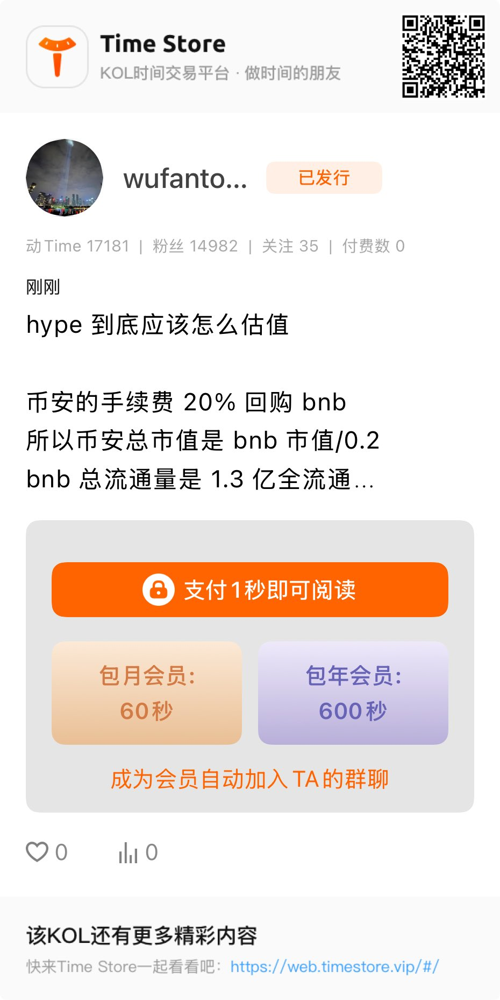

#1 · wufantouzi · 2026-06-01T18:02:20.000Zhype 到底应该怎么估值wufantouzi发布了一条动Time，点击查看https://web.tsdaq.com/#/time/pages/timeDetail/index?timeid=151233…https://web.tsdaq.com/#/time/pages/timeDetail/index?timeid=151233…
#5 · Bit_coinzeus · 2026-06-02T03:23:39.000Z币安改了很久了，现在bnb回购和手续费的20%没关系啊，季度回购销毁是根据bnb价格来的，有个计算公式，总量销毁到1亿，还有1.3几亿，有3000多万已经打到一个季度钱包，固定销毁了。
#6 · yuzhang54832207 · 2026-06-02T02:12:12.000Z不用研究这些了，我就是研究这些仓位少了，大家再抢筹定价hype未来，未来是什么样，ice为什么说比纳斯达克还大求合作，因为永续合约的高效，hype会拿到整个金融领域定价权，还有回调就抢，没有就没办法了